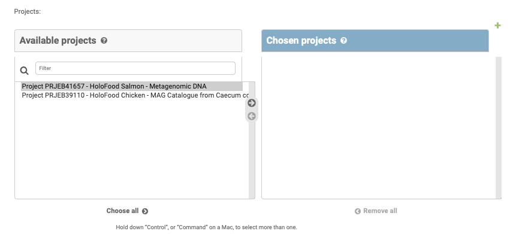

Admin access for HoloFood partners
Managing the database
Bulk activities, like importing samples and metadata, are covered in the repository README.
There is also an Admin Panel where individual database entries can be managed.
Authoring new Summary Analysis documents
Navigate to the site admin panel, and log in.
If you do not have the link or credentials, please contact the helpdesk.
Click “Add” on the “Analysis Summary” entry. Depending on your permission level, you may see different objects than shown in the screenshot.

Analysis summaries require a title (which is automatically converted into the URL slug). The document itself can be written as Markdown. To include images, upload them to a hosting site or GitHub repository, and include them via their URL. There are toolbar buttons in the markdown editor to help you with this syntax.

Analysis summaries must be linked to samples and/or catalogues. To link them, select the relevant samples/catalogues from the lists on the left, and hit the -> button to move the selected samples/catalogues to the right-hand list.
Don’t forget to press “Save and continue editing” now and then!
Editing and publishing Summary Analysis documents
Superuser credentials are required to publish analysis summaries. Until published, the documents do not appear on the public website. As a superuser, tick the “Is published” checkbox on an analysis summary edit page in the admin panel, and press Save.
If you believe you should have superuser credentials, contact the helpdesk.